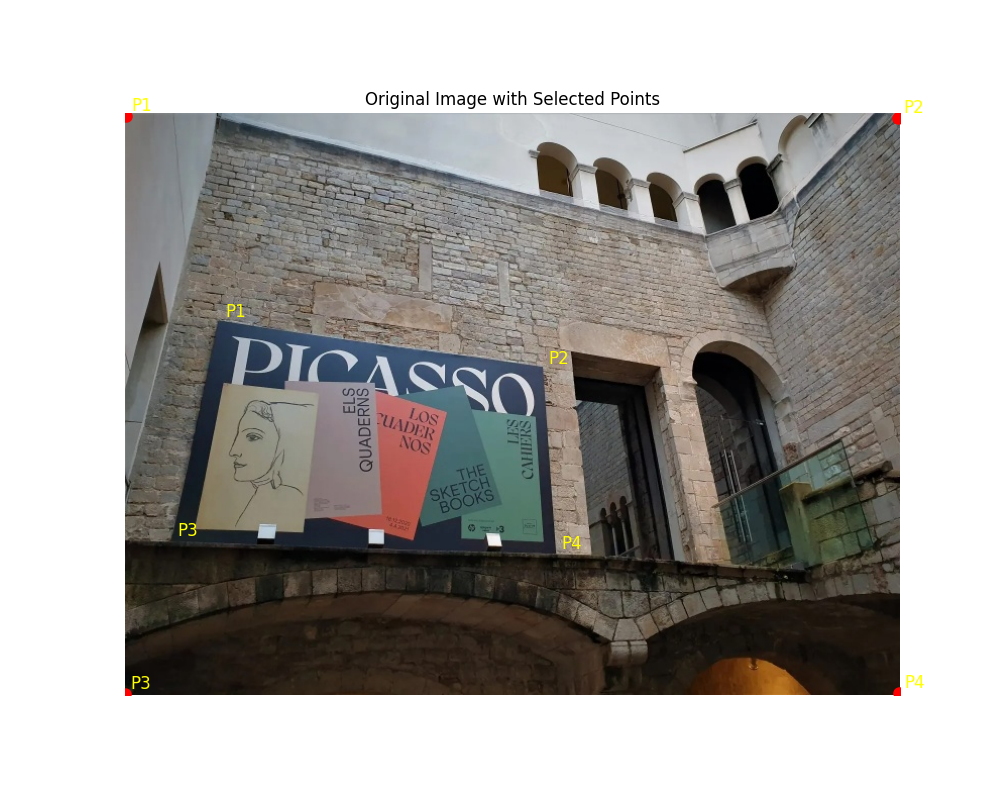
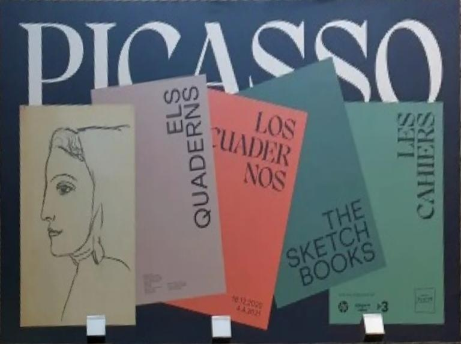
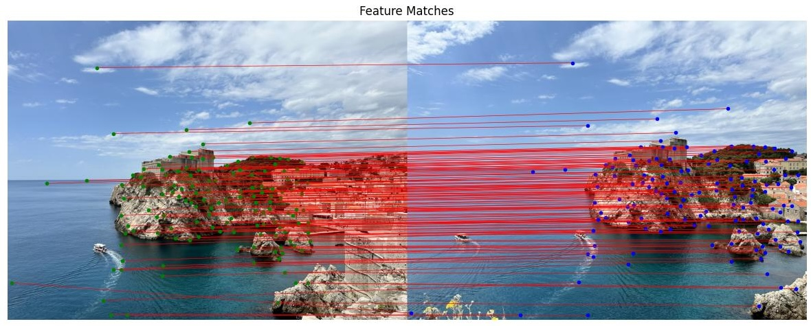
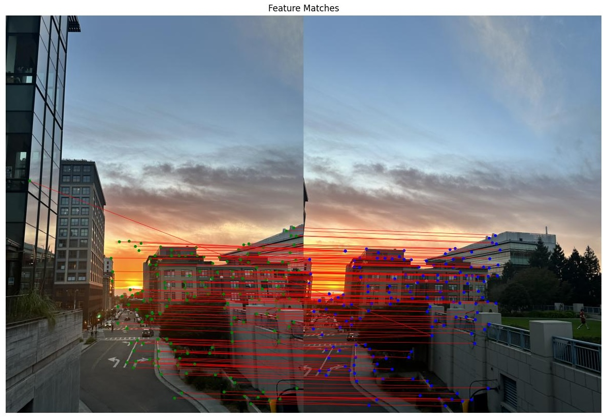
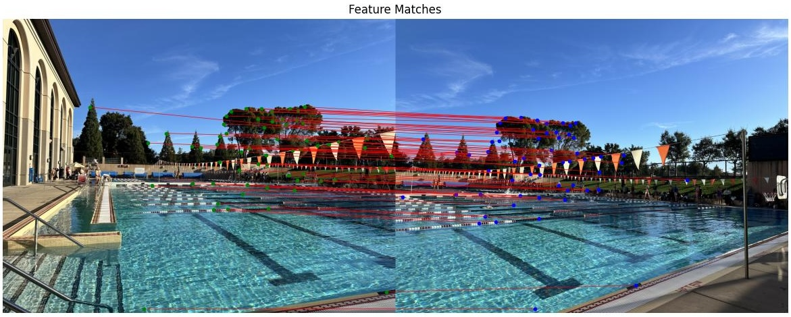
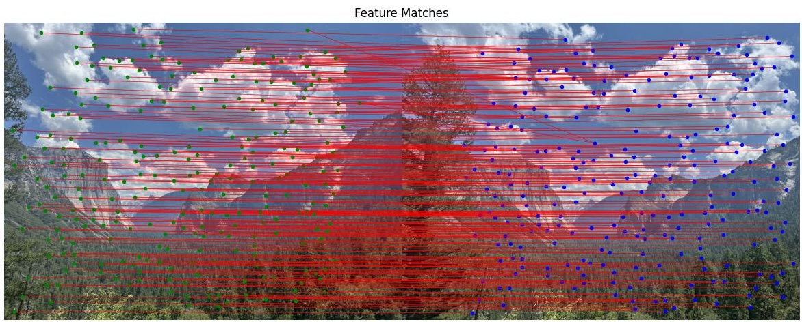
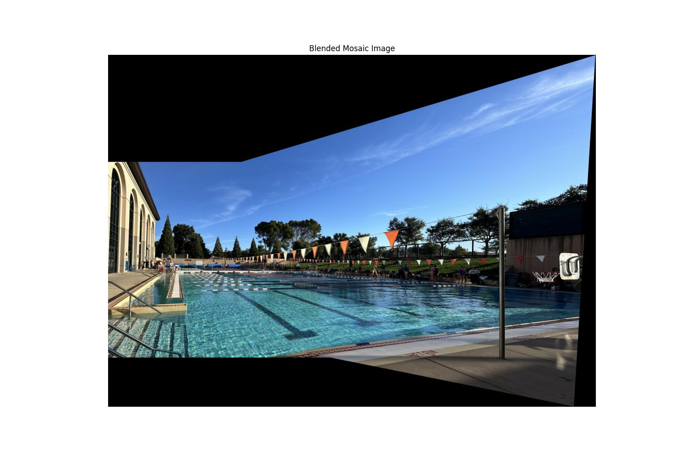
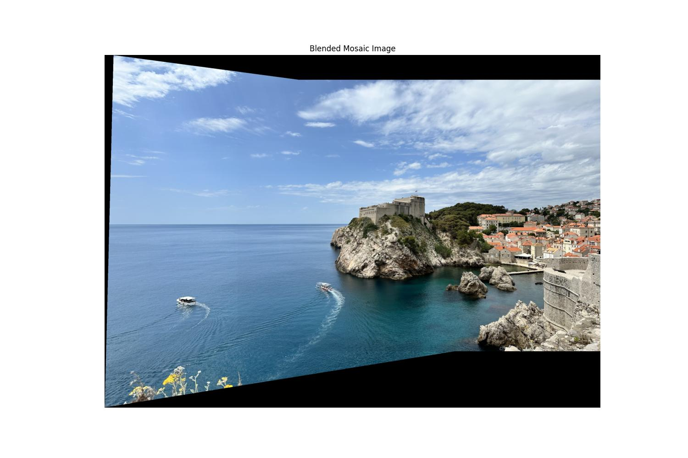
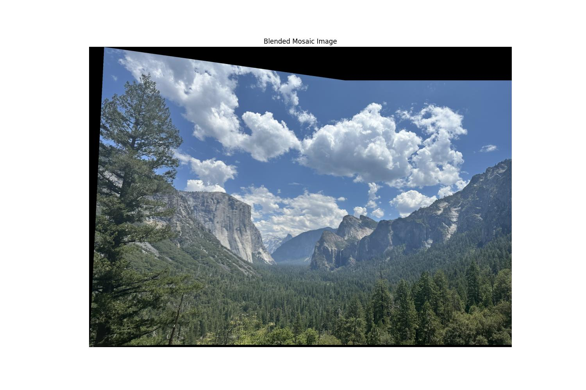
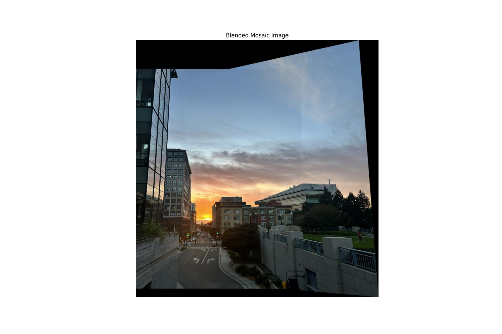

I needed to find the homography H such that p' = Hp, where p and p' are corresponding points in 2 images. I set up a system of equations derived from the homography relation. For each point correspondence, I formulated two equations based on the relationship. I used least-squares to solve for H. I moved on to warping one image to align it with the other. This involved applying the homography to the pixels of the image. I performed inverse warping to avoid holes in the output image. In inverse warping, I mapped pixels in the output image back to the source image using the inverse homography. I used interpolation during the warping process. Since the transformed coordinates might not align exactly with pixel grids, I used bilinear interpolation to estimate pixel values at non-integer coordinates.
 A big challenge in this step was determining the size of the output canvas for both images after warping transformations. To fix this, I transformed the corner points of the images using the homography and computed the bounding box that held all transformed points. For blending images into a mosaic, I use a simple weighted averaging technique to combine overlapping regions. The weights are calculated such that overlapping areas contribute equally to the final result. This basic approach results in a somewhat smooth mosaic. For the second part of this project, I implemented the gradual alpha masking.
I opted to utilize provided code (harris.py) to expedite this step. I processed the images by loading and resizing them to manageable dimensions, which reduced computational load. I also decided to tweak the parameters in harris.py to filter out some of the corners. I increased sigma in corner_harris, and increased min_distance and set threshold_rel in peak_local_max.
I extracted patches of size 40x40 pixels centered on each keypoint and then resized these patches to a standard size of 16x16 pixels. I applied Gaussian blur to the patches to reduce high-frequency noise that could affect matching. Additionally, I normalized each patch to have zero mean and unit variance to reduce the effects of illumination differences and contrast variations between images.
I implemented a feature matching algorithm based on Lowe's ratio test. For each feature in the first image, I calculated the distances to all features in the second image. By comparing the closest and second-closest distances, I could determine if a match was significant. A good match would have a closest distance that was a lot smaller than the second-closest one.
   The goal is to find the homography matrix that best maps points from the first image to corresponding points in the second image, that is also robust to incorrect matches. I implemented RANSAC by randomly selecting subsets of matched points to compute candidate homographies. For each candidate, I transformed the points from the first image using the homography and measured how well they aligned with the points in the second image. By counting the number of inliers, which are points that fit the homography within a certain tolerance, I identified the homography with the maximum number of inliers as the best estimate. After computing the homography, I extracted the inlier matches based on this best estimate and plotted them to confirm their accuracy. We can see the number of matches slightly reduces post RANSAC.
I calculated the size of the output mosaic by transforming the corners of the images using the homography and determining the combined dimensions. This also required adjusting the homography to account for any necessary translation so that that both images would fit properly into the mosaic space. I implemented alpha blending using alpha masks. I created alpha masks for both images, where each mask had values that smoothly decreased from the center of the image to the edges. This helps to reduce the visible seams and gradually blends the images where they overlap. I performed a weighted averaging by dividing the accumulated pixel values by the combined alpha mask.
   Throughout this project, I learned a lot of the complexities in feature detection, matching, and image transformation. One of the most memorable lessons is the importance of consistent coordinate handling. Early on, I came across issues where the images were being warped in unexpected directions. This was due to inconsistencies in how I was handling (x, y) and (y, x) coordinates in my code. Even small discrepancies in coordinate conventions can cause big errors, which requires meticulous attention to detail. The coolest thing I learned was the power of the RANSAC algorithm in computing homographies even with outliers. Implementing RANSAC and seeing it robustly estimate the correct transformation by selecting the inlier matches was very cool.